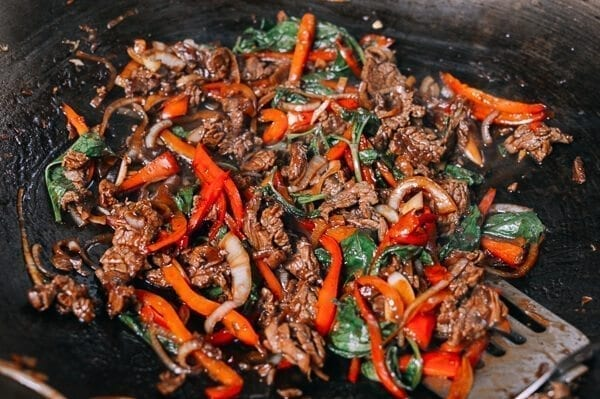

<!DOCTYPE html>

<html lang="en">
    <head>
        <meta charset="UTF-8">
        <title>Pad Kra Pao</title>
    </head>
</html>

<body>
    <h1>Pad Kra Pao</h1>
    
    
    <p>Photo from <a href="https://thewoksoflife.com/thai-basil-beef-pad-gra-prow/"> The Woks of Life</a></p>
    
    <h2> Description </h2>

    <p>Popular Thai fast food dish, adapated here to my taste and to what ingredients I can get my hands on. 
        Usually made with ground meat, made here with steak. Usually topped with a fried egg - here the egg is fried into the noodles,
        which I use instead of rice. Plenty of chillies, a dark rich sauce. 
        <br>
        <br>
         Delicious and very spicy. 
         <br>
         <br>
         Adapted from <a href="https://hot-thai-kitchen.com/pad-kra-pao-beef/"> Hot Thai Kitchen</a> </p>

    <h2> Ingredients </h2>
    <ul>
        <li>Very Lazy Garlic <em>or</em> 6 cloves fresh garlic</li>
        <li>As many birdseye peppers as you can handle</li>
        <li>A handful of milder chilli peppers</li>
        <li>Your choice of steak x2</li>
        <li>1 Tbsp oyster sauce</li>
        <li>3 Tbsp soy sauce, a mix of light and dark if you like</li>
        <li>2 tsp fish sauce</li>
        <li>2 Tbsp water</li>
        <li>1 1/2 tsp sugar</li>
        <li>1 1/2 cup basil leaves</li>
        <li>2 eggs</li>
        <li>250g (dried weight) noodles</li>
    </ul>

    <h2> Steps</h2>
    <ol>
        <li>Chop up or blend the chillies, or if you're feeling traditional, pound with a mortar and pestle.</li>
        <li>Mix the oyster sauce, soy sauce, fish sauce, water and sugar in a small bowl</li>
        <li>Begin to boil the noodles, and cut into strips and wok fry the steak, adding garlic and the chillies (beware acrid smoke - in Thailand people cook this outside!)</li>
        <li>When the noodles are done, drain them and fry the eggs into them in the saucepan you boiled them in</li>
        <li>When the steak is nearly done, add the sauce and toss. Add the basil and turn the heat off, letting the basil wilt in the wok.</li>
        <li>Add the egg-fried noodles to the wok, toss all together and serve</li>
    </ol>


    </ul>
</body>